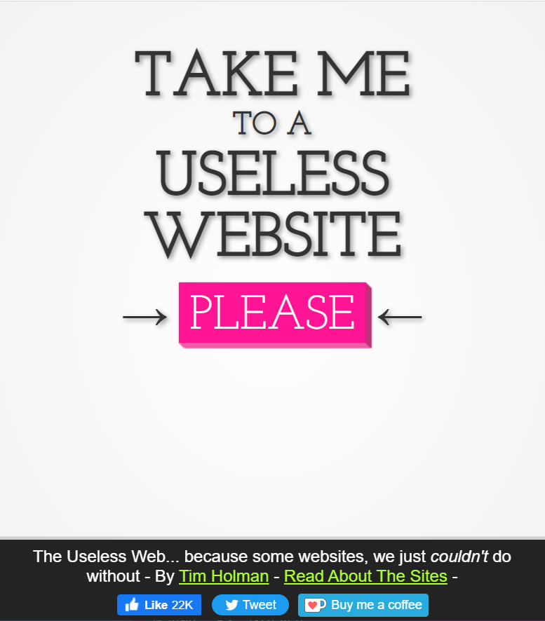
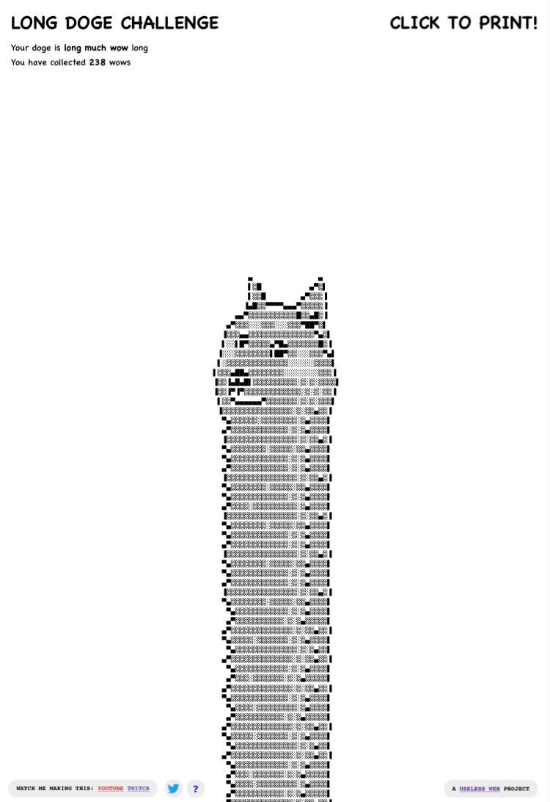

Hick's Law
The Useless Web
theuselessweb.com Hick's law states "the more choices a person is presented with, the longer the person will take to reach a decision." THe more choices, and the les spleasing those choices are, the longer it will take for the user to make a descision of one is even made. The Useless Web accomplishes this fantastically. THe designers of the website knew exactly what the prpose of their website was, and rather than throwing the user into a complicated choice based situation, they make it very clear where it is you are suposed to go and do on the website. They emphasise this even more with the pleasing astetic and vibrant color used in the button design. It becomes as enjoyable as it is simple. The simplicity of the design and application of Hick's law is even more prominent in the mobile version. This is not because the design itself changes, but the mobile user is more used to a lower amount of options and site feedback, so the design builds off of the experience mobile users are already tuned for.
Fitt's Law
Can't Not Tweet This
cant-not-tweet-this.comThe simplest application of Fitt's Law in web design is to make interactable objects, like buttons, larger the more dificult it is for the user to get to it. So, if the user has to wave their cursor to the middle of the screen to hit a button then the button better be large so its not to difficult for the user to use. If a button is at the top or side of the screen it doesnt need to be as large because the screen limits can actually be used to your advantage because they force the users cursor to stop, making the difficulty to hit the interactable object less dificult. The website "Can't Not Tweet This" aproaches the Fitt's Law problem in an entirely different and unique way. The design philosophy here is that, instead of making the button larger to make it easier too get to and interact with, they bring the interactable to the user instead. By removing the distance between the users cursor and the button they eliminate the need to change the objects size and, as a result, amplify the experience the user is expecting to get from the website.
Visual Hierarchy
The Long Doge Challenge
longdogechallenge.com The principle of Visual Hierarchy can be implemented in many ways, the specific ways The Long Doge Challenge emphasises this principle best is through scale and proximity. First, scale. The way the website uses scale to emphasise the important design aspects of the site is impressive. Interactable objects are large and bold, non-interactable objects are the oposite. Things the user needs to pay attention to are larger than the surounding text, i.e. the "wow" count and the "wow" length (bosth imperitive to the challenge) are bolded in the sentance that contains them. The biggest object on the website is the doge itself, which is the focus of the site. As you progress down the site you also get visual feedback of your progress through variable sized wow's. Second, proximity. Objects close together emphasise eachother and bring the users focus. On top of that, the proximity the object are to natural focus points, like the top of the screen, also give objects higher emphasis. The Long Doge Challenge executes this very well by grouping all the needed information together and in the top corners, which are natural focus points. Thay also use proximity to emphasise the print option by keeping it away from other objects making it emphasised by the surrounding white space.